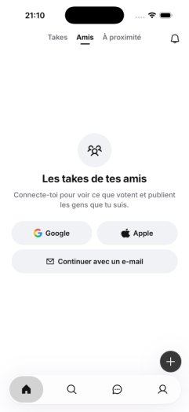

Tour 2 · à faire
Sans compte, ouvrir sur « Takes », pas sur un mur
Aujourd'hui : quelqu'un touche « Découvrir sans compte » et tombe sur « Amis », qui n'est qu'un écran « Connecte-toi ». Le premier écran qu'il voit est un mur.
L'idée : sans compte, l'app s'ouvre sur « Takes », le fil public. Il voit tout de suite des questions et a envie de voter. « Amis » reste là pour quand il aura un compte.
Aujourd'hui

Imaginé
TakesAmisÀ proximité
Léa · il y a 1 h
Tu préfères un lundi sans cours ou un vendredi sans cours ?
Lundi
Vendredi
128 votes
Noah · il y a 2 h
Le meilleur kebab de ta ville est chez toi ?
Non
Oui
Jev : faire, 0,90.